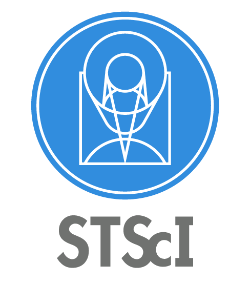
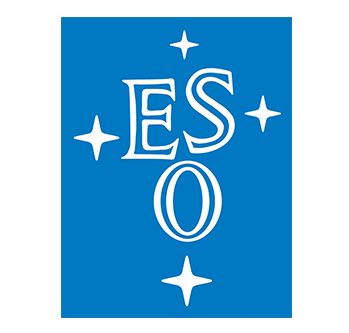
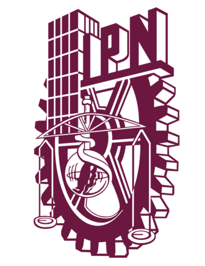

About me, what I do
Université Claude Bernard Lyon-I, France
PhD in Physics & Astrophysics (2005) Doctorat
On sky validation of the polychromatic laser guide star concept for adaptive opticsAdvisor: Renaud Foy †
Université Grenoble Alpes, France
Master's in Astrophysics (2001) DEA Astrophysique et Milieux Dilués
University of Utah, USA
Master of Science in Instrumentation Physics (2000)
Université Savoie Mont Blanc, France
Technology Degree in Physical Measurements (1998) DUT Mesures Physiques
Post PhD positions I have held since 2006:
Space Telescope Science Institute, USA  7 years, 10 months and counting
Scientist (Full) (June 2023 - Present) Long Term Senior Research Staff
STScI Scientist III (October 2020 - June 2023) Senior Research Staff
Support Scientist (August 2017 - October 2020) Senior Research Staff
European Southern Observatory, Chile  8 years
Operations Staff Astronomer (August 2009 - July 2017) Paranal Adaptive Optics Specialist
Instituto Politécnico Nacional, Mexico  9 months
Assistant Professor (October 2008 - June 2009) Profesor/Investigador Titular A at ESFM
Universidad Nacional Autónoma de Mexico (UNAM), Mexico 2 years
Postdoctoral Fellow (october 2006 - September 2008) Investigador Postdoctoral at IA-UNAM
Main roles I have had in the past 16 years at STScI and ESO:
Space Telescope Science Institute, USA
JWST/NIRCam Instrument Scientist (2017 - Present) Documentation, User support
JWST/NIRCam Coronagraphy Lead (2017 - Present) Commissioning, Calibrations, Pipeline
JWST Coronagraphs Working Group Lead (2017 - Present) NIRCam and MIRI
Roman Coronagraph Expert and Liaison (2017 - Present) To Science Investigation Teams (SITs), Community Participation Program (CPP), CTC and SSC
European Southern Observatory, Chile
Paranal Lead Instrument Scientist of VLT/SPHERE (2014-2017) User Support, Commissioning, Tests, Calibrations
Paranal Lead Instrument Scientist of VLT/NACO (2009-2015) User Support, (re)Commissioning, Tests, Calibrations
Adaptive Optics Group Coordinator (2009 - 2016) Commissioning, User support
UT4 Coordinator (2012-2013)
UT3 Coordinator (2014-2015)
Shift Coordinator (2013 - 2017) Lead/management of the whole VLT/VLTI/VISTA/VST operations at night and/or day.
Service to the community or to the organizations I work(ed) for:
Space Telescope Science Institute, USA
JWST/NIRCam Instrument Scientist (Full) (2017 - Present) Documentation, User support
JWST/NIRCam Coronagraphy Lead (Full) (2017 - Present) Commissioning, Calibrations, Pipeline
JWST Coronagraphs Working Group Lead (Full) (2017 - Present) NIRCam and MIRI
Roman Coronagraph Expert and Liaison (Full) (2017 - Present) To Science Investigation Teams (SITs), Community Participation Program (CPP), CTC and SSC
European Southern Observatory, Chile
Paranal Lead Instrument Scientist of VLT/NACO (2009-2015) User Support, (re)Commissioning, Tests, Calibrations
Adaptive Optics Group Coordinator (Full) (2017 - Present) Commissioning, User support
UT4 and UT3 Coordinator (Full) (2017 - Present) NIRCam and MIRI
Shift Coordinator (Full) (2017 - Present) Lead/management of the whole operations at night and/or day (2013-2017).
Service to the community or to the organizations I work(ed) for:
Space Telescope Science Institute, USA
JWST/NIRCam Instrument Scientist (Full) (2017 - Present) Documentation, User support
JWST/NIRCam Coronagraphy Lead (Full) (2017 - Present) Commissioning, Calibrations, Pipeline
JWST Coronagraphs Working Group Lead (Full) (2017 - Present) NIRCam and MIRI
Roman Coronagraph Expert and Liaison (Full) (2017 - Present) To Science Investigation Teams (SITs), Community Participation Program (CPP), CTC and SSC
European Southern Observatory, Chile
Paranal Lead Instrument Scientist of VLT/NACO (2009-2015) User Support, (re)Commissioning, Tests, Calibrations
Adaptive Optics Group Coordinator (Full) (2017 - Present) Commissioning, User support
UT4 and UT3 Coordinator (Full) (2017 - Present) NIRCam and MIRI
Shift Coordinator (Full) (2017 - Present) Lead/management of the whole operations at night and/or day (2013-2017).
Service to the community or to the organizations I work(ed) for:
Space Telescope Science Institute, USA
JWST/NIRCam Instrument Scientist (Full) (2017 - Present) Documentation, User support
JWST/NIRCam Coronagraphy Lead (Full) (2017 - Present) Commissioning, Calibrations, Pipeline
JWST Coronagraphs Working Group Lead (Full) (2017 - Present) NIRCam and MIRI
Roman Coronagraph Expert and Liaison (Full) (2017 - Present) To Science Investigation Teams (SITs), Community Participation Program (CPP), CTC and SSC
European Southern Observatory, Chile
Paranal Lead Instrument Scientist of VLT/NACO (2009-2015) User Support, (re)Commissioning, Tests, Calibrations
Adaptive Optics Group Coordinator (Full) (2017 - Present) Commissioning, User support
UT4 and UT3 Coordinator (Full) (2017 - Present) NIRCam and MIRI
Shift Coordinator (Full) (2017 - Present) Lead/management of the whole operations at night and/or day (2013-2017).
researchers can have a life too